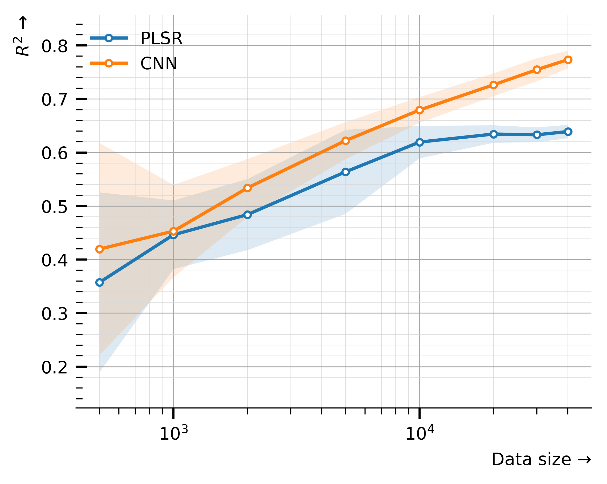

if 'google.colab' in str(get_ipython()):
from google.colab import drive
drive.mount('/content/drive', force_remount=False)
!pip install mirzai
else:5.1. PLSR vs. CNN Learning Curves
Visualizing the behaviours (performances) of PLSR and CNN models as the number of samples increases

# Python utils
from pathlib import Path
import pickle
from mirzai.vis.core import (centimeter, PRIMARY_COLOR,
plot_learning_curve, plot_capacity,
set_style, DEFAULT_STYLE)
from mirzai.training.core import load_dumps
# Data vis.
import matplotlib.pyplot as plt
from matplotlib.gridspec import GridSpec
# Data science stack
import pandas as pd
import numpy as np
import warnings
warnings.filterwarnings('ignore')Utilities
def reduce(dumps):
df = pd.concat([pd.DataFrame(perf) for perf in dumps])
return df.groupby(['n_samples']).agg({'test_score':['mean','std']})Input data
To generate the learning curves for both the PLSR and CNN models, run the following notebooks: * PLSR Learning curve * CNN Learning curve
Instead, we load already generated and saved data: history_pls_learning_curve.pickle and history_cnn_learning_curve.pickle.
PLSR
src_dir = Path('dumps/plsr/learning_curve')dumps = load_dumps(src_dir)df_plsr = reduce(dumps); df_plsr| test_score | ||
|---|---|---|
| mean | std | |
| n_samples | ||
| 500 | 0.357241 | 0.168292 |
| 1000 | 0.446311 | 0.064118 |
| 2000 | 0.484049 | 0.066392 |
| 5000 | 0.563827 | 0.078549 |
| 10000 | 0.619452 | 0.030407 |
| 20000 | 0.634474 | 0.016305 |
| 30000 | 0.633108 | 0.013739 |
| 40132 | 0.639170 | 0.012540 |
CNN
src_dir = Path('dumps/cnn/learning_curve')dumps = load_dumps(src_dir)df_cnn = reduce(dumps); df_cnn.head()| test_score | ||
|---|---|---|
| mean | std | |
| n_samples | ||
| 500 | 0.419518 | 0.198391 |
| 1000 | 0.453100 | 0.086281 |
| 2000 | 0.533940 | 0.054055 |
| 5000 | 0.622144 | 0.034591 |
| 10000 | 0.679383 | 0.024025 |
history_plsr, history_cnn = [{'nb_samples': df.index.to_numpy(),
'r2_mean': df[('test_score', 'mean')].to_numpy(),
'r2_std': df[('test_score', 'std')].to_numpy()
}
for df in [df_plsr, df_cnn]]history_plsr{'nb_samples': array([ 500, 1000, 2000, 5000, 10000, 20000, 30000, 40132]),
'r2_mean': array([0.35724121, 0.44631125, 0.48404897, 0.56382695, 0.61945173,
0.63447414, 0.63310825, 0.63917001]),
'r2_std': array([0.16829222, 0.06411818, 0.06639178, 0.0785487 , 0.03040741,
0.01630533, 0.01373926, 0.0125405 ])}history_cnn{'nb_samples': array([ 500, 1000, 2000, 5000, 10000, 20000, 30000, 40132]),
'r2_mean': array([0.41951778, 0.45309992, 0.53394023, 0.6221441 , 0.67938348,
0.72648183, 0.75480461, 0.77354623]),
'r2_std': array([0.19839095, 0.08628061, 0.05405458, 0.03459126, 0.02402495,
0.02137746, 0.02162855, 0.01649216])}Plot
def plot_learning_curve(x, losses_train, losses_valid, ax=None, train_kwargs={}, valid_kwargs={}):
if ax is None:
ax = plt.gca()
ax.plot(x, losses_train, label='Training', **train_kwargs)
#ax.plot(x, losses_valid, label='Validation', **valid_kwargs)
ax.set_yscale('log')
ax.set_xscale('log')
return(ax)def plot_learning_curves(history_pls, history_cnn,
figsize=(10*centimeter,8*centimeter), dpi=600):
# Layout
fig = plt.figure(figsize=figsize, dpi=600)
gs = GridSpec(nrows=1, ncols=1)
ax = fig.add_subplot(gs[0, 0])
# Plots
params = {'marker': 'o', 'mfc':'w', 'ms':3}
x, mean, std = history_plsr.values()
fill_between_params = {'facecolor': 'C0', 'alpha': 0.15, 'zorder': 1}
ax.fill_between(x, mean + std, mean - std, **fill_between_params)
ax.plot(x, mean, label='PLSR', c='C0', **params)
x, mean, std = history_cnn.values()
fill_between_params = {'facecolor': 'C1', 'alpha': 0.15, 'zorder': 1}
ax.fill_between(x, mean + std, mean - std, **fill_between_params)
ax.plot(x, mean, label='CNN', c='C1', **params)
ax.set_xscale('log')
# Ornaments
ax.legend(loc='best', frameon=False)
ax.set_ylabel('$R^2$ →', loc='top')
ax.set_xlabel('Data size →', loc='right')
ax.grid(True, "minor", color="0.85", linewidth=0.2, zorder=-20)
ax.grid(True, "major", color="0.65", linewidth=0.4, zorder=-10)
plt.tight_layout()FIG_PATH = Path('images/')
set_style(DEFAULT_STYLE)
plot_learning_curves(history_plsr, history_cnn)
# To save/export it
plt.savefig(FIG_PATH/'learning-curves.png', dpi=600, transparent=True, format='png')